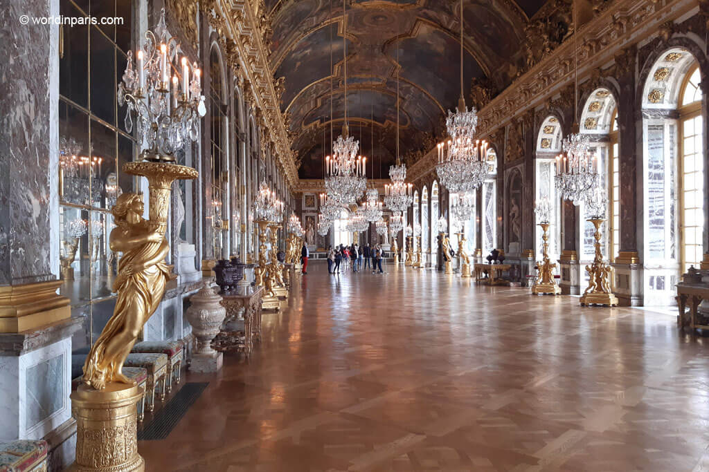

Tappa 1
Galleria degli Specchi (Galerie des Glaces)
La sala più celebre di Versailles: 357 specchi riflettono le finestre che si affacciano sui giardini. Il soffitto è decorato con affreschi che narrano le imprese di Luigi XIV e la gloria dell’assolutismo. Questo ambiente è elemento simbolico e coreografico della rappresentanza reale.
